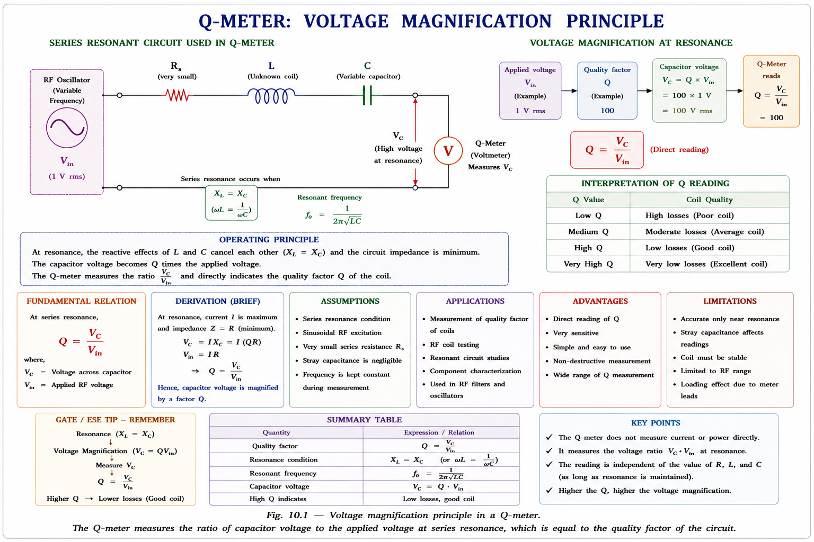
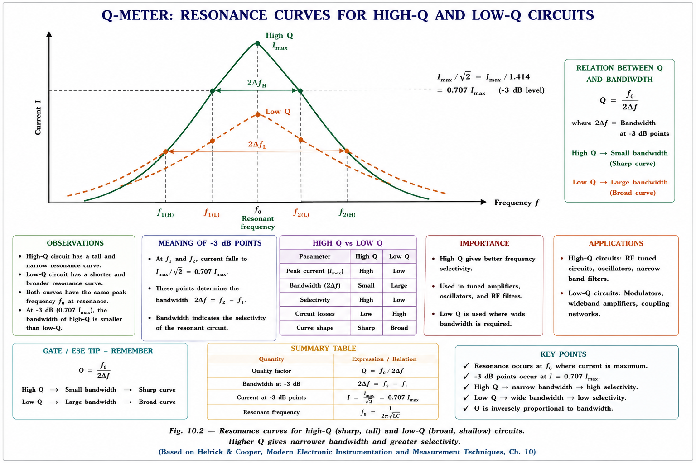
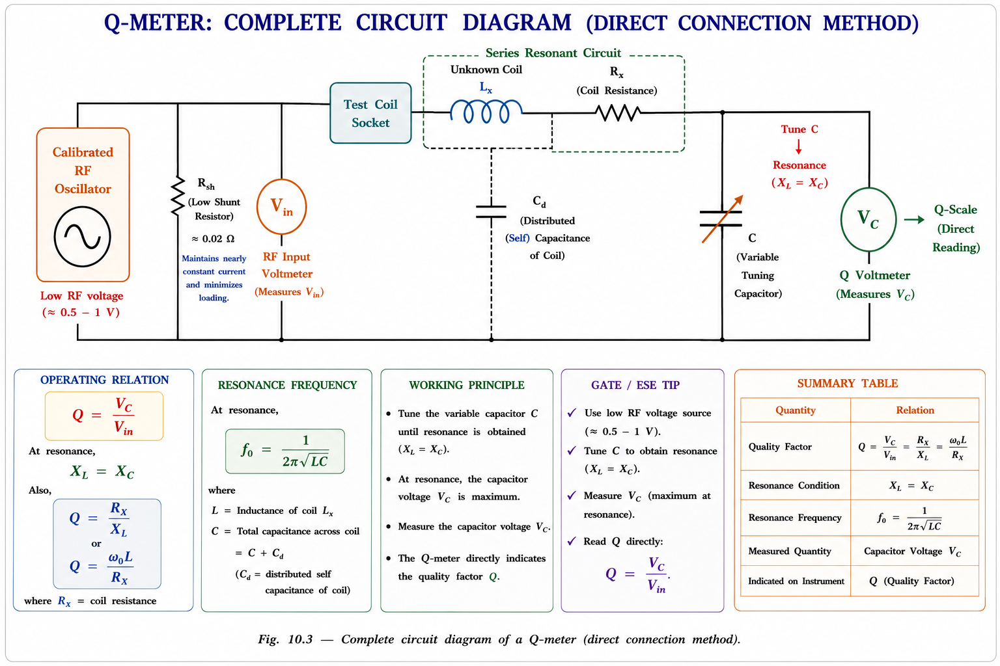
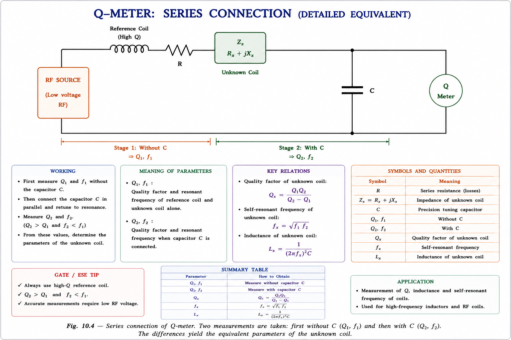
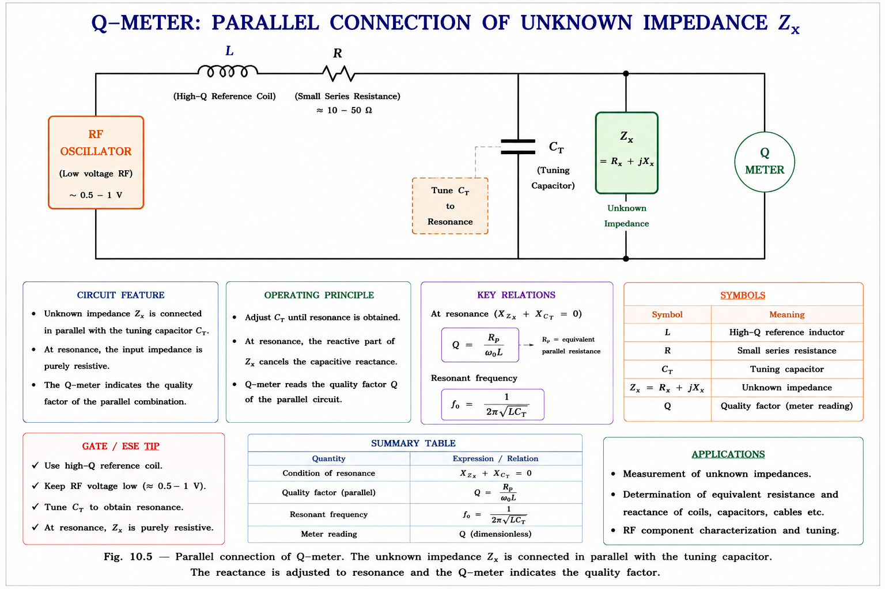
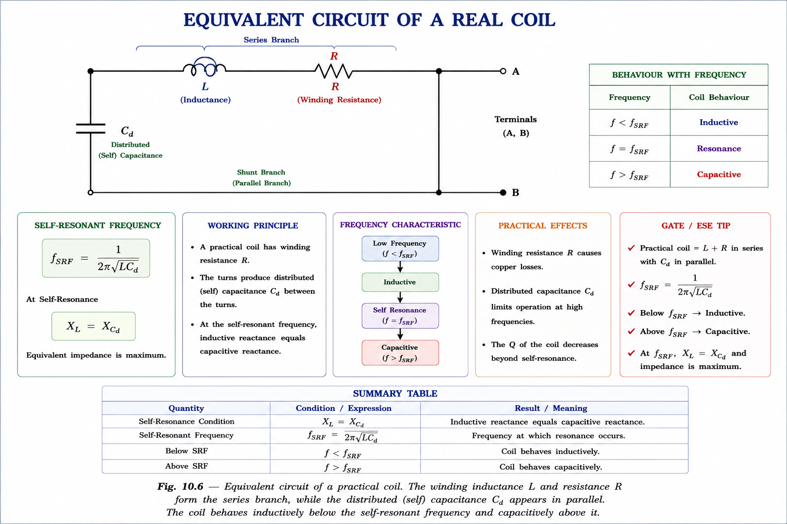

A thorough, exam-focused chapter on the Q-meter — its operating principle, circuit analysis, series and parallel connection methods, sources of error, and complete GATE & IES perspectives. All content derived from standard reference textbooks.
In radio-frequency (RF) and high-frequency electronics, inductors and capacitors are never ideal. A real coil wound with copper wire has resistance distributed throughout its length. This unwanted resistance dissipates energy — energy that was meant to be stored in the magnetic field. The ratio of energy stored to energy dissipated per cycle, scaled by \(2\pi\), defines the Quality Factor Q.
Before the Q-meter was developed in the 1930s, measuring inductance, self-capacitance, and effective resistance of RF coils at operating frequencies was extremely tedious — requiring separate bridge measurements that were difficult to perform at megahertz frequencies. The Q-meter solved all of this in a single, direct-reading instrument.
High Q in a coil means low resistive loss, sharper resonance, better selectivity in radio receivers, and higher efficiency in oscillator circuits. Broadcast receivers require coil Q values typically above 100. The Q-meter gives the engineer a direct, rapid measurement at the actual operating frequency.
Imagine a child on a swing. Each push you give is small — but if you time it perfectly with the swing's natural frequency, the swing goes higher and higher. The amplitude of the swing at resonance compared to the amplitude of your push is the Quality Factor. A very smooth, low-friction bearing gives a high Q; a rusty pivot (high friction) gives a low Q.
In a series RLC circuit at resonance, something equally dramatic happens: the voltage appearing across the capacitor (or inductor) can be Q times larger than the voltage applied to the entire circuit. If you apply 1 V to a circuit with Q = 100, you get 100 V across the capacitor. The Q-meter exploits this directly — it measures that magnified voltage and divides by the source voltage, giving Q as a direct meter reading.
The Q-meter does not measure resistance directly. It measures voltage magnification at resonance. The connection between the two is: high resistance → low magnification → low Q. Low resistance → high magnification → high Q.

The Quality Factor of a reactive component or resonant circuit is defined in three equivalent ways, each revealing a different physical insight:
Where \(X_L = \omega L\) is the inductive reactance, \(R\) is the effective series resistance of the coil (which includes skin-effect resistance, core loss resistance, and winding resistance), \(V_C\) is the voltage across the tuning capacitor at resonance, and \(V_{\text{in}}\) is the applied voltage.
Consider a series RLC circuit driven by a sinusoidal source \(V_{\text{in}}\). At resonance, \(X_L = X_C\), so the total impedance collapses to \(Z = R\) (purely resistive minimum). The current is at its maximum:
The voltage across the capacitor is \(V_C = I_{\text{res}} \cdot X_C\). Since at resonance \(X_C = X_L = \omega_0 L\):
The same relationship holds for the inductor voltage: \(V_L = Q \cdot V_{\text{in}}\) at resonance. Both \(V_C\) and \(V_L\) are Q times the supply voltage, but they are equal and opposite in phase — they cancel in the loop equation, leaving only \(V_R = V_{\text{in}}\).
The Q-factor also determines the bandwidth of the resonant circuit. A higher Q gives a narrower, more selective resonance peak — essential for channel selectivity in radio receivers.
Here \(f_1\) and \(f_2\) are the lower and upper half-power (−3 dB) frequencies.

The Q-meter is essentially a series-resonant circuit with a built-in RF signal generator and two voltmeters. Its key components are:[1]

Step 1: Connect the unknown coil to the test terminals (socket) of the
Q-meter.
Step 2: Set the oscillator to the desired test frequency.
Step 3: Vary the tuning capacitor C until the voltmeter VC reads a
maximum (resonance condition).
Step 4: Read Q directly from the Q-scale of the voltmeter. Note capacitor
setting C₁.
Step 5: Calculate inductance: \(L = \frac{1}{(2\pi f)^2 C_1}\) and effective
resistance \(R = \frac{\omega L}{Q}\).
The shunt resistance Rsh serves as the internal impedance of the voltage source. For an ideal voltage source, the internal impedance should be zero. At 0.02 Ω, it is several orders of magnitude smaller than the coil resistance under test (which may be 1–10 Ω). This ensures that Rsh does not add significant error to the Q measurement — the effective Q measured is:
Since \(R_{\text{sh}} \ll R_{\text{coil}}\), the error is negligible in most practical cases. However, when measuring high-Q coils (Q > 300), this small addition becomes significant and a correction is necessary.
The Q measured by the instrument is called the circuit Q, which is slightly lower than the true or actual Q of the coil alone, because the measurement circuit includes distributed capacitance Cd and the shunt resistance Rsh. For routine engineering work this difference is negligible; for precision RF design it must be corrected.
The series connection extends the Q-meter to measure low-impedance components that cannot be placed directly in the test socket — including small coils (high mutual inductance), low-value resistors, and large capacitors. The unknown impedance Zx = Rs + jXs is inserted in series with the reference coil.[2]

Measurement 1 (without Zx): The circuit resonates at frequency \(f\) with capacitor set to \(C_1\), reading \(Q_1\).
Measurement 2 (with Zx = Rs + jXs in series): Re-tune to resonance with capacitor at \(C_2\), reading \(Q_2\).
At resonance in both cases, \(\omega L = \frac{1}{\omega C}\). The unknown reactance is what shifts the capacitor from \(C_1\) to \(C_2\). From the resonance condition in the second measurement:
If \(C_2 < C_1\): the unknown is inductive (Xs is positive).
Capacitor must be reduced to re-tune because the unknown added inductive reactance.
If \(C_2 > C_1\): the unknown is capacitive (Xs is negative).
Capacitor must be increased to compensate the extra capacitive reactance.
Think of it like a balance scale. In the first measurement, the scale is perfectly balanced (resonance) with the tuning capacitor at C₁. When you add an inductive component, you have tilted the scale toward inductance. To re-balance (re-tune to resonance), you must reduce the tuning capacitor. The amount you reduce it — proportional to \((C_1 - C_2)\) — tells you how much inductive reactance the unknown component brought in.
| Scenario | Direction of C change | Nature of Xs | Component type |
|---|---|---|---|
| C₂ < C₁ | Decrease C | Positive (inductive) | Inductor / small coil |
| C₂ > C₁ | Increase C | Negative (capacitive) | Capacitor |
| C₂ = C₁ | No change | Zero (resistive) | Pure resistor |
For high-impedance components — high-value resistors, some inductors, and small capacitors — the series connection introduces too much voltage drop across the unknown, disturbing the resonance significantly. In parallel connection, the unknown impedance is placed directly in parallel with the tuning capacitor. The disturbance to Q is minimised because the high-impedance unknown draws only a small current.[2]

In parallel connection, the unknown admittance \(Y_x = G_p + jB_p\) modifies the total admittance of the tank circuit. Two measurements again: with and without Zx.
| Parameter | Series Connection | Parallel Connection |
|---|---|---|
| Unknown impedance range | Low impedance | High impedance |
| Components measured | Small coils, low R, large C | High R, small C, some L |
| Connection point | In series with reference coil | Parallel with tuning C |
| C change on insertion | Inductive → C decreases | Capacitive → C increases |
| GATE probability | 🟢 HIGH | 🟡 MED |
Every coil has parasitic capacitance distributed between its turns. This distributed capacitance \(C_d\) appears electrically as a capacitor in parallel with the coil. At DC this is irrelevant, but at RF frequencies it becomes significant — it modifies the effective inductance, raises the apparent Q above the true value, and creates a self-resonance frequency above which the coil behaves as a capacitor.[3]

Because Cd adds capacitance in parallel with the tuning capacitor, the true capacitance in the resonant circuit is \(C + C_d\), not just the indicated value \(C\). This creates a systematic error. The circuit Q reading appears higher than the true coil Q.
To find the distributed capacitance, measure the resonant capacitor values at two frequencies: \(f_1\) and \(f_2 = 2f_1\). At resonance in each case, \(\omega^2 L(C + C_d) = 1\). This gives two equations in two unknowns (L and Cd).[3]
Here \(C_1\) is the tuning capacitor setting at \(f_1\) and \(C_2\) is the setting at \(f_2 = 2f_1\). The factor of 4 arises because at double the frequency, the resonating capacitance contribution of inductance changes by \((2f)^2/f^2 = 4\).
If Q is measured at two frequencies and they are not equal, distributed capacitance is the culprit. True Q should be independent of which capacitor value you use to resonate — the circuit Q stays constant if Cd is zero.
| Error Source | Effect on Q Reading | Correction Method |
|---|---|---|
| Shunt resistance Rsh | Reads lower than true Q | Negligible for most coils; corrected in precision work |
| Distributed capacitance Cd | Reads higher than true Q | Use double frequency method to find Cd |
| Voltmeter loading | Slightly reduces Q | Use very high impedance FET voltmeter |
| Residual inductance of C | Creates series resonance error | Use air-spaced precision variable capacitor |
| Stray lead inductance | Modifies measured L value | Keep test leads as short as possible |
Q-meter questions in GATE typically test: (i) the principle of voltage magnification, (ii) the formula Q = VC/Vin, (iii) application of the series connection formulas to find component parameters, and (iv) the effect of distributed capacitance. Questions are almost always 1-mark MCQs or 2-mark MCQs with numerical options.
A series resonant circuit has \(L = 100\,\mu\text{H}\), \(C = 100\,\text{pF}\), and effective series resistance \(R = 5\,\Omega\). At resonance, the Q-factor and the voltage across the capacitor if the supply voltage is 10 mV are:
In a Q-meter measurement, the circuit Q is slightly lower than the true Q of the coil because:
Note: Both Rsh (reduces Q) and Cd (increases apparent Q) contribute to measurement error, but the dominant error explicitly associated with Q being lower than true is Rsh.
In a Q-meter, the series connection is used for measurement of:
The parallel connection is the complement: high impedances — small capacitors, certain large inductors, and high resistors.
The self-resonance frequency (SRF) of a coil is that frequency at which the distributed capacitance Cd resonates with the coil inductance L. Which statement is correct?
Q-meter measurements must always be performed at frequencies well below SRF. IES frequently tests this concept in combination with the double-frequency method for Cd.
Given \(Q = 80\) and \(f_0 = 800\,\text{kHz}\), find the half-power bandwidth.
Solution: \(BW = f_0/Q = 800\,\text{kHz}/80 = 10\,\text{kHz}\). The circuit passes frequencies from 795 kHz to 805 kHz at greater than 70.7% of maximum current. This selectivity is why high-Q coils are essential in broadcast receiver IF stages.
A Q-meter resonates at \(f = 2\,\text{MHz}\) with tuning capacitor set to \(C = 63.3\,\text{pF}\). Find the coil inductance.
Solution: \(L = \dfrac{1}{(2\pi f)^2 C} = \dfrac{1}{(2\pi \times 2\times10^6)^2 \times 63.3\times10^{-12}} \approx 100\,\mu\text{H}\). The calibrated oscillator frequency and capacitor scale together give inductance directly from: \(\omega^2 LC = 1\).
Both \(V_C = QV_{in}\) and \(V_L = QV_{in}\) at resonance. Students sometimes think only the capacitor voltage is magnified. Both are magnified equally. They are equal in magnitude but 180° apart in phase — they cancel, leaving \(V_R = V_{in}\). The Q-meter reads VC because it is more convenient to connect a voltmeter across a two-terminal capacitor than across a coil.
Students often think all errors reduce Q. Cd in parallel with the tuning capacitor reduces the net reactance needed from the external tuning capacitor, making the coil look better than it is. The result is that the measured Q is higher than the true Q. Only Rsh makes Q appear lower.
When an inductive component is added in series, the total inductance increases. To re-tune to the same resonant frequency, you must reduce C (since \(\omega_0 = 1/\sqrt{LC}\), increasing L requires decreasing C). Many students incorrectly infer that \(C_2 < C_1\) means the component is capacitive.
Unlike DC resistance measurement (ohmmeter) or low-frequency bridge methods, the Q-meter is uniquely capable of characterising coils at their intended RF operating frequency. Skin effect, core loss, and proximity effect all change with frequency — a coil that has Q = 200 at 1 MHz may have Q = 50 at 10 MHz due to skin-effect resistance increase.
Rsh (0.02 Ω) is the internal shunt resistance of the Q-meter's voltage source — it is part of the instrument. The coil under test has its own resistance Rcoil. The effective total resistance in the measurement circuit is \(R_{\text{total}} = R_{\text{coil}} + R_{\text{sh}}\), making the measured Q slightly lower than Qtrue.
Remember: Quality = Quantified Voltage. \(Q = V_C/V_{in}\). The Q-meter is literally a voltage ratio meter calibrated in Q. Think of it as a "voltage amplification tester at resonance."
Series connection → High-current / Low-impedance components (resistors, small coils, large capacitors). Parallel connection → High-impedance (small capacitors, some large inductors). Think: Series = Small Z, Parallel = Plarge Z.
\(C_d = (C_1 - 4C_2)/3\). Remember: "One, Four, Three" — single measurement at f, quadruple coefficient at 2f, divided by three. The factor 4 comes from \((2f)^2 = 4f^2\) in the resonance equation.
Imagine you push a swing (apply Vin). At the swing's natural frequency (resonance), the swing rises Q times higher than your push amplitude. You measure how high it goes (VC) versus how hard you pushed (Vin) and call the ratio Q. A smooth bearing (low resistance) gives a high swing height (high Q). A rusty pivot (high resistance) → low Q.
Series resonance voltage magnification. \(Q = V_C/V_{in}\) at resonance. Also \(Q = X_L/R = \omega L/R\). Instrument reads Q directly.
RF oscillator (50 kHz–50 MHz), shunt Rsh ≈ 0.02 Ω, variable tuning capacitor C, electronic voltmeter (Q-scale).
Low-Z unknowns (low R, small L, large C). Two readings: (Q₁,C₁) without, (Q₂,C₂) with. C₂<C₁ → inductive. C₂>C₁ → capacitive.
High-Z unknowns (high R, small C, some large L). Unknown in parallel with tuning capacitor. Same two-reading method applies.
Rsh → Q reads LOW. Cd → Q reads HIGH. Voltmeter loading → Q reads LOW. Stray leads → L reads high.
\(C_d = (C_1 - 4C_2)/3\). Measure at f₁ and 2f₁. Above self-resonant frequency, coil appears capacitive — cannot be measured as inductor.
\(L = 1/[(2\pi f_0)^2 C_1]\). \(R = \omega_0 L / Q\). Both follow directly from the resonance condition and Q definition.
\(BW = f_0/Q\). Higher Q → narrower bandwidth → more selective circuit. Used in receiver design: IF stages need Q > 50–100.
1. Always identify if the unknown is high-Z or low-Z to choose series vs
parallel connection.
2. Check the sign of (C₁ − C₂) to identify inductive or capacitive
nature of the unknown.
3. Remember: Rsh lowers Q (adds to R), Cd raises
apparent Q (adds capacitance to tank) — opposite effects on error.
Ask any doubt about Q-meter, series resonance, distributed capacitance, or GATE-level problems. Get step-by-step expert explanations.
Instrument Transformers — Current Transformers (CT) and Potential Transformers (PT): equivalent circuits, ratio and phase-angle errors, burden, accuracy classes, knee-point voltage, protection vs metering CTs, and complete GATE & IES concepts.
All technical content is derived from the following standard textbooks. All explanations, derivations, and inline SVG diagrams are original to Aarova AI. No content reproduced from any coaching material.